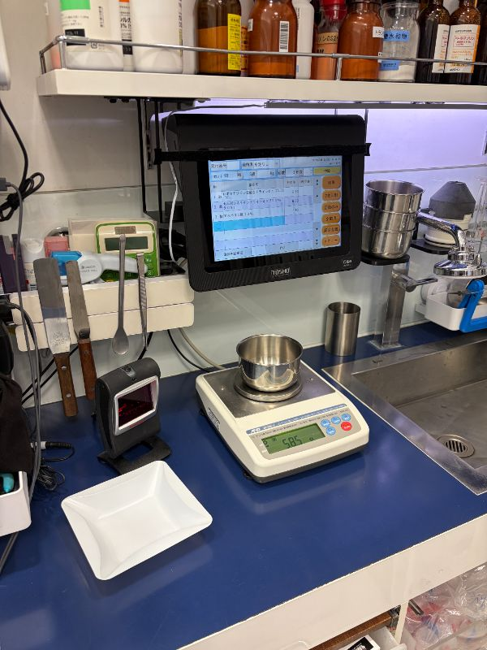
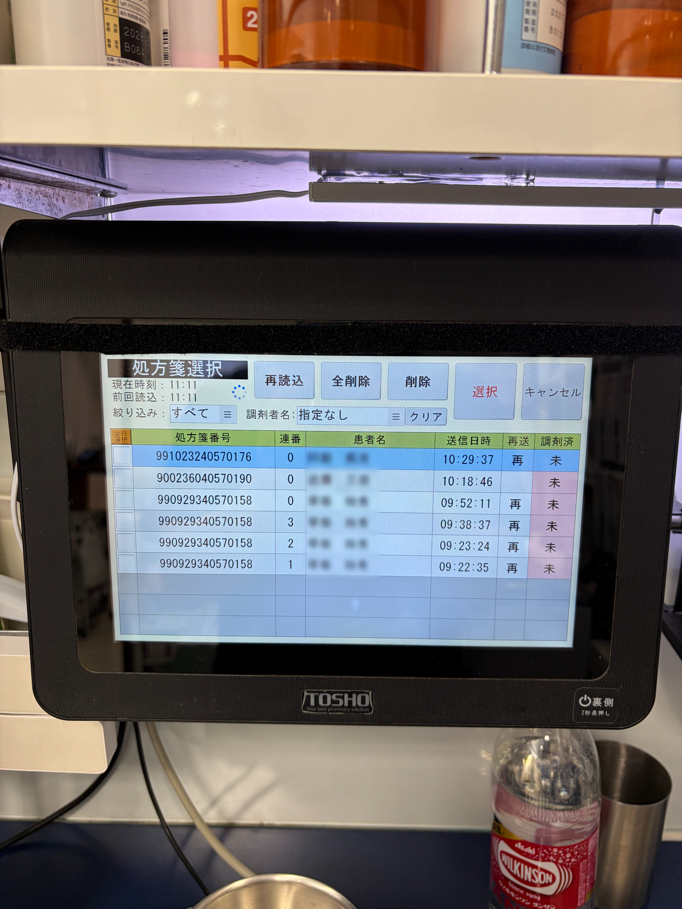
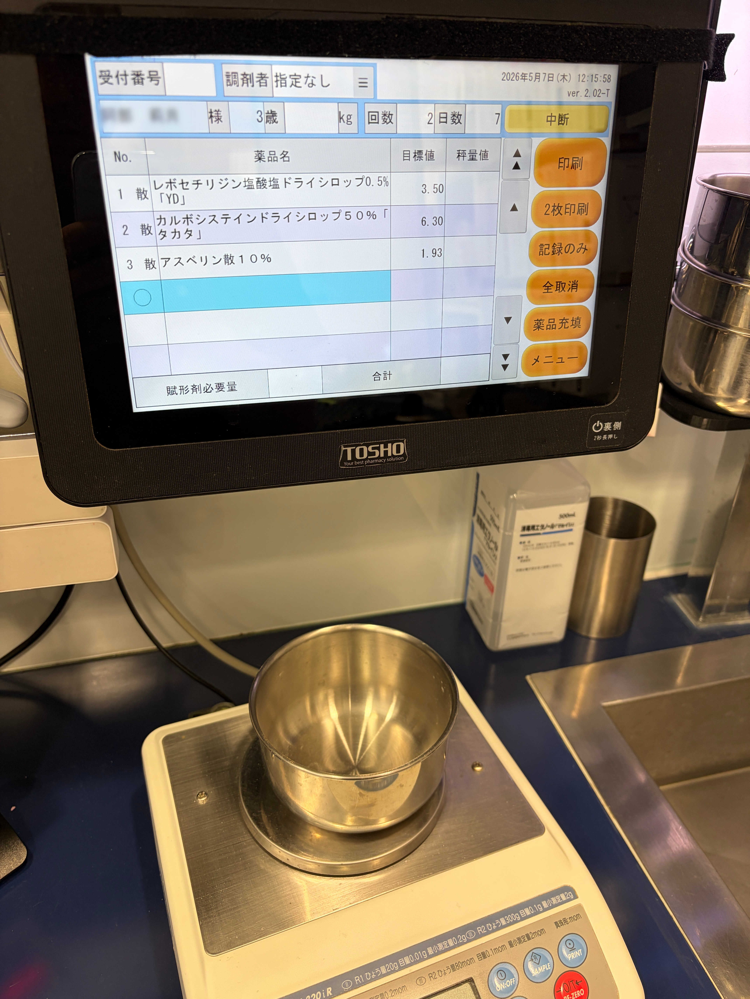

TOSHO監査システムでの秤量手順
安全かつ正確な調剤を行うため、システム画面の指示に従って計量を行ってください。

1監査台周辺のレイアウト確認
作業を始める前に、モニター、バーコードリーダー、電子天秤など、監査台周辺の機器のレイアウトを確認します。
▼

2患者の選択
監査システムの画面から、調剤を行う対象の患者様を選択します。氏名や処方内容に間違いがないか確認してください。
▼

3医薬品の読み取りと計量
バーコードリーダーで該当する医薬品のコードを読み取ります。
その後、秤量画面（天秤）に表示される指示量に合わせて計量します。
計量にはステンレスのボウル・薬包紙・クロサーラのどれを使っても構いません。慣れたものをお使いください。